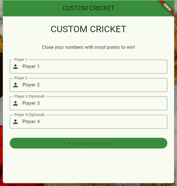
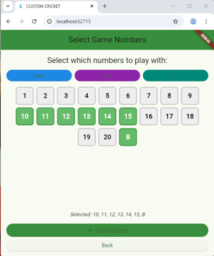
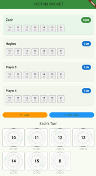
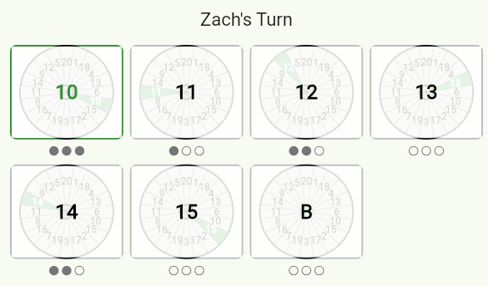
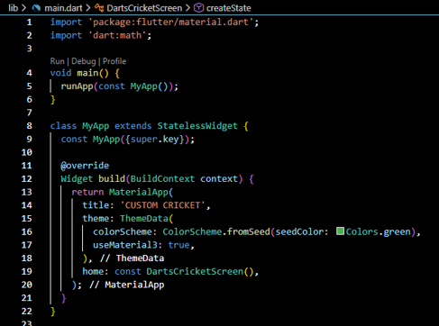
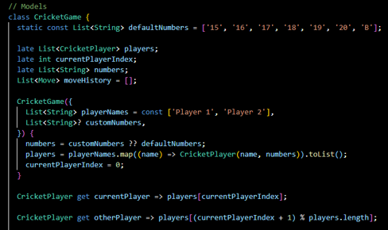
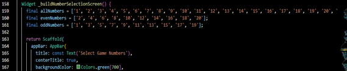
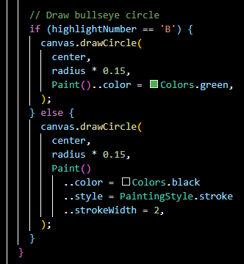

Custom Cricket
CIS 293 – Advanced Technologies
Custom Cricket is a cross-platform darts scoring app built with Dart and Flutter. It started as a joke — "what if we used ALL the numbers?" — after learning the traditional Cricket dart game, which only uses numbers 15–20 and the bullseye. The app lets players fully customize which numbers are in play, supports up to four players, and tracks scores dynamically across turns.
The app features a player setup screen, a number selection screen (evens, odds, all, or custom),
a live game screen with per-player scorecards, and a custom-painted dartboard visualization that
highlights the active number. Game state is managed through a CricketGame model
class with full move history support.
Application Highlights
Key screens and code from the project presentation

Users enter names for up to four players before proceeding to number selection.

Players choose which numbers to include — evens, odds, all, or a custom selection.

Live scorecards per player, current turn indicator, and interactive dartboard grid.

Custom painter draws a dartboard highlighting the selected number in green.
Sample Code
Key sections from the Dart/Flutter codebase

Initializes the Flutter app with Material Design 3 and green color scheme, routing to DartsCricketScreen.

CricketGame class manages players, current turn, move history, and number state across the full game session.

Builds a grid of all dart numbers with toggle selection and preset filters for evens, odds, and all numbers.

Uses Flutter's CustomPainter to render a dartboard and highlight the active number dynamically.
Full presentation available: The project presentation PDF walks through each section of the codebase with slide-by-slide explanations and embedded screenshots of the running app. Open Presentation →